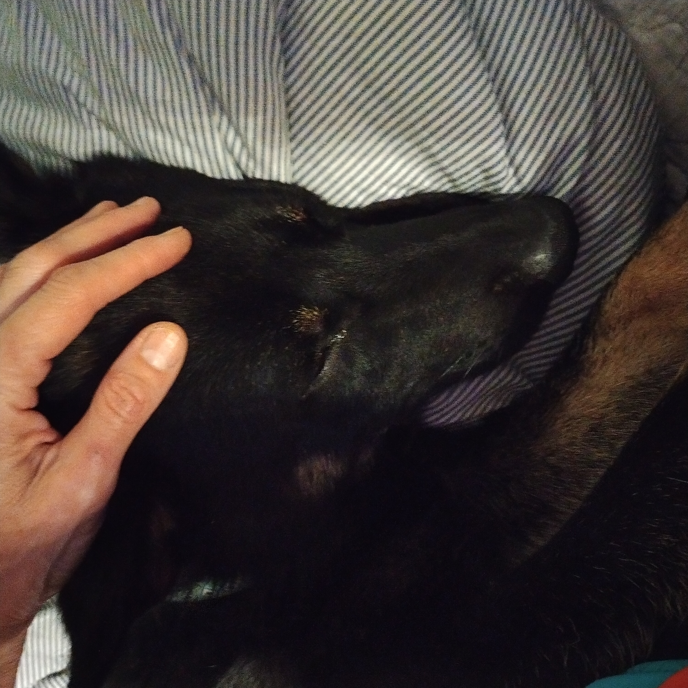
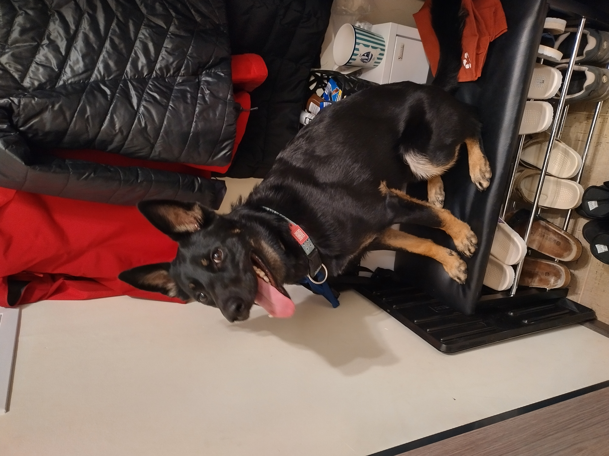

Príbeh Porthosa
Ako sa psík z útulku stal členom našej rodiny
Začiatok
Porthos prišiel do nášho života z útulku v čase covidu. Vybrali sme si ho podľa fotografie. Bol vystrašený a plný nedôvery. Prvé mesiace v novom domove boli náročné pre všetkých. Bál sa takmer všetkého, hrozbou bol šuštiaci sáčok, kávovar, metla, vysávač a každý nový človek. Jeho trávenie bolo také zdevastované, že sme niekoľko krát riešili hnačky a zvracanie na veterine.
Neporozprával nám čo všetko zažil, ale jeho telo a správanie nám hovorili dosť. Reaktivita nie je charakterová chyba. Je to odpoveď na skúsenosti ktoré pes mal alebo nemal. Porthos sa nenaučil dôverovať, pretože zažil veľa temnoty. Ešte stále, aj po tých rokoch kedy naňho nikto nevztiahol ruku, sa zúfalo rozplače, keď sa mu doma od radosti alebo vzrušenia stane "nehoda".
Naša práca bola jednoduchá, ukázať mu že svet môže byť aj iný. Že ľudia môžu byť predvídateľní, láskaví a spoľahliví. Že prechádzka nemusí byť stres. Že domov je bezpečné miesto. A tak sa snažím neísť za hranicu jeho komfortnej zóny ale ísť presne na jej hranicu a postupne ju posúvať tak aby mal istotu v tom, že ho nezradím a, že má možnosť voľby.

Pokroky
Každý týždeň priniesol malé víťazstvá. Pvý krát keď neštekal na kávovar. Prvýkrát keď sa sám prišiel poláskať bez toho aby sme ho volali.
Pracujeme s pozitívnym posilňovaním. Žiadne tresty, žiadny nátlak. Porthos sa učí že správanie ktoré chceme prináša odmenu, maškrtu, hru, pochvalu. Reaguje na hlas, gesto, pohľad. Je to veľmi inteligentný pes keď mu dáš šancu, ukáže to. Povel "miesto" sa naučil z relácie o výcviku psov, len sme to doladili.
Dnes Porthos pracuje a pri canicross ma vedie po lese, už ho niektorí susedia pozdravia a on ich odignoruje. S poriadnym odstupom dokáže neriešiť iného psa na ulici. Cez presklenné dvere z garáže do bytovky priateľsky kýva na susedov chvostíkom. Doma akceptuje všetkých ľudí, ktorí s našim vedomím vstúpia do bytu. Nie je to dokonalé, nikto nie je dokonalý. A každý deň je lepší ako ten predchádzajúci.
